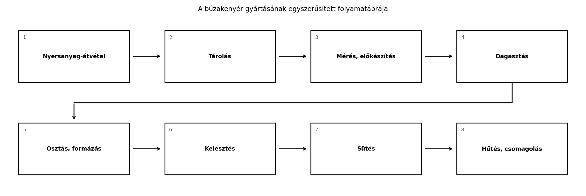

Hajnali kenyérsütéskor az éjszakás pék lisztet önt a dagasztóba, beállítja a gépet, majd a formázóasztalnál az előző műszakból maradt tésztadarabkát talál az asztal sarkában. Az asztal nincs letakarítva, rajta egy sóoldatos vödör és egy üres, korábban tojásos tölteléket tartalmazó edény. A pék megkeveri a tésztát, és eszébe jut, hogy a terméklistán „tejmentes zsemle” is szerepel. Honnan tudja, hogy a liszt, a gép, az asztal vagy éppen a levegőben szálló lisztpor nem szennyezi-e a készülő tételt? Ki felel azért, hogy a vevő ne kapjon allergéntől szennyezett vagy romlott terméket? A válasz a HACCP: egy olyan, lépésről lépésre felépített kockázatkezelő gondolkodásmód, amely nem a szerencsére, hanem az előre átgondolt, szabályozott folyamatokra épít.
A HACCP nem „papírmunka” és nem kizárólag a hatóságnak szóló nyilvántartás. Olyan munkamódszer, amely a pékségben minden nap, minden műszakban segít megelőzni, hogy a kenyér, a zsemle vagy a kalács élelmiszer-biztonsági szempontból rossz legyen. Ha a pék érti a veszélyelemzést, akkor nem csak követi a szabályokat, hanem be tudja azonosítani, hol lehet baj, és mit kell tennie, hogy a baj ne következzen be.
Az alábbi folyamatábra egy búzakenyér egyszerűsített gyártásmenetét mutatja. A HACCP-veszélyelemzés során ezen a folyamaton haladunk végig lépésről lépésre, és minden lépésnél feltesszük a kérdést: mi romolhat el, és hogyan előzhető meg.

A folyamatábrából látszik, hogy a termék útja a beszállítástól a késztermékig nyolc állomáson keresztül vezet. Mindegyik állomáson máshol lehet a kockázat: a tárolásnál a penészedés, a dagasztásnál a nem megfelelően mosott gép, a sütésnél a nem eléggé átsült bélzet, a csomagolásnál pedig a szennyezett csomagolóanyag. A HACCP arra tanít, hogy ezeket a veszélyeket ne utólag, hanem már a tervezés és a napi munka során vegyük számba.
Definíció. (HACCP) A HACCP a Hazard Analysis and Critical Control Points angol kifejezés rövidítése, magyarul veszélyelemzés és kritikus szabályozási pontok. Olyan rendszer, amely az élelmiszer-biztonsági veszélyeket azonosítja, kiértékeli és azokat a folyamat olyan pontjain szabályozza, ahol a veszély megelőzése, megszüntetése vagy elfogadható szintre csökkentése lehetséges. (Ellenőrizendő: az élelmiszerjog szerinti meghatározás és a hatályos Codex Alimentarius szöveg.)
Definíció. (Veszély, kockázat, valószínűség, súlyosság)
Szabály. (A HACCP hét alapelve) A Codex Alimentarius által lefektetett hét alapelv, amelyet az uniós élelmiszerjog is elvár az élelmiszer-vállalkozóktól (ellenőrizendő: a 852/2004/EK rendelet követelményei és a Codex Alimentarius aktuális HACCP-útmutatója):
Az első két alapelv – a veszélyelemzés és a CCP-k meghatározása – szorosan összetartozik. Ebben az alfejezetben az alapokkal, a veszélyelemzéssel foglalkozunk; a CCP-k konkrét meghatározása a következő, Kritikus szabályozási pontok, határértékek, monitoring és dokumentáció alfejezetben következik.
Definíció. (Előfeltételek, GHP, GMP) A HACCP csak akkor működik jól, ha a vállalkozás előtte megvalósítja az alapvető higiéniai és gyártási feltételeket. A jó higiéniai gyakorlat (GHP) a személyi és üzemi higiénia, takarítás, kártevőirtás, hulladékkezelés, munkaruha és egészségügyi alkalmasság általános szabályait jelenti. A jó gyártási gyakorlat (GMP) a gyártás helyes technológiai rendjét, a gépek, eszközök, munkaműveletek szakszerű kialakítását és a megbízható beszállítói kapcsolatokat foglalja magában. Ha például a dolgozó nem mos kezet, vagy a raktárban kártevők vannak, a HACCP hiába határoz meg kritikus pontot, a rendszer alapja hiányos.
Definíció. (HACCP-csoport) A HACCP kidolgozását és naprakészen tartását HACCP-csoport végzi. Kis pékségben ez lehet két-három ember, nagyüzemben több szakterület képviselője (pék, műszakvezető, minőségbiztosító, karbantartó, tulajdonos). A csoport feladata, hogy a termékről, a folyamatról, a gépekről és a lehetséges veszélyekről pontos ismereteket gyűjtsön, elkészítse a folyamatábrát, elvégezze a veszélyelemzést, meghatározza a CCP-ket, és gondoskodjon a dokumentációról. A csoport döntéseit a gyakorlati tapasztalat, a szabályozás és a mérési eredmények együttesen alapozzák meg.
Szabály. (A veszélyelemzéshez szükséges kiinduló adatok) A HACCP első lépése nem a veszélylista készítése, hanem a termék és a folyamat pontos leírása. Ehhez szükség van:
A veszélyelemzés lépései:
A veszélyek négy csoportja:
Példa. (Valószínűség és súlyosság becslése) Tegyük fel, hogy egy pékségben a dagasztógép csigájának kopása miatt apró fémforgács kerülhet a tésztába. A valószínűséget becsüljük 3-as szintre (előfordulhat, de nem minden tételnél), a súlyosságot 4-es szintre (a fogyasztó fogazatát, szájüregét sértheti, orvosi ellátást igényelhet). A kockázat , ami közepes–magas kockázat, tehát mindenképpen megelőző intézkedés szükséges (például a dagasztóelemek rendszeres szemléje és a kopó alkatrészek tervezett cseréje, valamint a késztermék fémdetektálása; a lisztáramba épített mágnes csak a liszttel érkező vasas szennyeződést fogja fel, a dagasztóban keletkező, gyakran nem mágnesezhető rozsdamentes forgácsot nem). A számok tanulási példák, nem hatósági határértékek; a tényleges besorolást a HACCP-csoportnak kell meghatároznia.
Kockázati mátrix. A gyakorlatban a valószínűséget és a súlyosságot gyakran 1–5 skálán értékelik, majd a szorzatukból kockázati osztályt képeznek. Az alábbi táblázat példát ad a mátrixra; a szín- és számbeli besorolás tanulási példa, amit az üzem HACCP-terve rögzít.
| Valószínűség Súlyosság | 1 (nagyon enyhe) | 2 (enyhe) | 3 (közepes) | 4 (súlyos) | 5 (nagyon súlyos) |
|---|---|---|---|---|---|
| 1 (ritka) | 1 – alacsony | 2 – alacsony | 3 – alacsony | 4 – közepes | 5 – közepes |
| 2 (alkalmi) | 2 – alacsony | 4 – közepes | 6 – közepes | 8 – magas | 10 – magas |
| 3 (lehetséges) | 3 – alacsony | 6 – közepes | 9 – magas | 12 – magas | 15 – nagyon magas |
| 4 (gyakori) | 4 – közepes | 8 – magas | 12 – magas | 16 – nagyon magas | 20 – nagyon magas |
| 5 (gyakorlatilag biztos) | 5 – közepes | 10 – magas | 15 – nagyon magas | 20 – nagyon magas | 25 – nagyon magas |
A mátrixot tehát úgy olvassuk, hogy ha például a valószínűség 4, a súlyosság 2, akkor a kockázati pontszám 8, ami magas besorolást kap, tehát jelentős megelőző intézkedésre és gyakran CCP vagy részletes GHP-szabályozásra van szükség. (Ellenőrizendő: az üzem kockázatértékelési módszere, mert a HACCP-tervben a pontozás és a besorolás cégenként eltérő lehet.)
Vegyünk egy hagyományos búzakenyeret, 1 kg-os késztömeggel. A folyamatábra nyolc lépése közül (a szomszédos lépéseket összevonva) ötre készítünk veszélyelemzést, hogy a módszert gyakoroljuk. A táblázat oszlopai jelzik a lehetséges veszélyeket, és példát adnak a megelőzésre. A táblázat tanulási példa; a teljes üzemi HACCP-veszélyelemzés ennél részletesebb és minden lépést tartalmaz.
| Folyamatlépés | Biológiai veszély (példa) | Kémiai veszély (példa) | Fizikai veszély (példa) | Allergén veszély (példa) | Megelőző intézkedések |
|---|---|---|---|---|---|
| Nyersanyag-átvétel | Penészes liszt, Salmonella a magvakon | Növényvédőszer-maradvány | Zsákból származó műanyag szál | Glutén, ha gluténmentes termékhez vesznek lisztet | Minősített beszállító, specifikáció, szemrevételezés, szitálás, visszaküldés nem megfelelő tételnél |
| Tárolás | Penészgombák elszaporodása párás, meleg raktárban | Tisztítószer gőze a nyitott kannából | Rágcsálóürülék, rovar | Allergén por más termékről | Szeparált tárolás, hűvös, száraz raktár, takarítás, kártevőirtás, fedett tárolóedények |
| Dagasztás | Hőálló spórák túlélése a lisztből | Kenőanyag a gépből | Kopott csigáról levált fémdarab | Korábbi tojásos tészta maradéka a gépben | Tiszta gép, szétválasztott gyártósor, kopó alkatrészek szemléje és cseréje, fémdetektálás a csomagolásnál, betanított dolgozó |
| Sütés | Vegetatív kórokozók (pl. Salmonella a tojásból) túlélése, ha a maghőmérséklet nem éri el a határt; a Bacillus-spórák a sütést túlélik, ezek ellen savanyítás, gyors hűtés és szabályozott tárolás kell | Akrilamid képződés túlzott barnuláskor | Idegen test a kemencében (pl. sütőlemez-darab) | Allergén keresztszennyeződés a kemencetérben | Maghőmérséklet ellenőrzése, sütési hőmérséklet és idő betartása, kemence takarítása, első tiszta tétel a „-mentes” jelöléssel értékesített termékhez |
| Hűtés, csomagolás | Utánszennyeződés a hűtőrácson, a dolgozó kezéről | Csomagolóanyag festékmaradványa | Műanyagdarab, fémkapocs | Allergén termék pora a csomagolótérben | Tiszta hűtőfelület, fémdetektálás, csomagolóanyag élelmiszeripari minősítése, légkezelés, sorrendi szabály |
A táblázatból jól látható, hogy a sütés lépésénél a vegetatív kórokozók (például a tojásból származó Salmonella) kockázata csak akkor csökken elfogadható szintre, ha a bélhőmérséklet eléri a kritikus határt (a spórák ellen a hűtés és a tárolás szabályozása kell), tehát ez a lépés jó jelölt a CCP-re. Hasonlóképpen a csomagolásnál a fémdetektálás lehet kritikus a fizikai veszély kizárására. Ezt a Kritikus szabályozási pontok, határértékek, monitoring és dokumentáció alfejezetben fogjuk tovább elemezni.
HACCP. A veszélyelemzés során a pékségben legalább a következő pontokat szokta a HACCP-csoport kiemelten kezelni (tanulási példa): a nyersanyag-átvétel mikrobiológiai és allergén ellenőrzése, a hűtött tárolás hőmérsékletének felügyelete, a dagasztógép és az eszközök tisztasága, a sütés maghőmérséklete, valamint a csomagolásnál a fémdetektálás. A kritikus határértékeket (például a sütési maghőmérsékletet, a hűtési hőmérsékletet, a tárolási időt) az üzem HACCP-terve rögzíti, és minden értéket ellenőrizni kell a hatályos hatósági útmutató és a gyártói adatlapok alapján. (Ellenőrizendő: az üzemi HACCP-terv aktuális paraméterei.)
Továbbvitt eredmény. A folyamatábra, a veszélyelemzés és a kockázati mátrix ebben az alfejezetben elkészített módszertana közvetlenül szükséges a Kritikus szabályozási pontok, határértékek, monitoring és dokumentáció alfejezetben. Ott a veszélyekből kiindulva döntési fa segítségével határozzuk meg, mely lépések válnak CCP-vé, és milyen mérhető határértékeket kell hozzájuk rendelni. A termékfejezetek (például Kenyérfélék, Péksütemények, Finom pékáruk) HACCP-pontjai is ezt a veszélyelemzést fogják visszaidézni.
Előírás. Az élelmiszer-higiéniáról szóló 852/2004/EK rendelet kimondja, hogy az élelmiszer-vállalkozók kötelesek a HACCP-elveken alapuló eljárásokat létrehozni, alkalmazni és fenntartani. A HACCP-elvek részletes leírását a Codex Alimentarius Élelmiszer-higiéniai Ajánlott Gyakorlati Kódexe tartalmazza. A fogyasztók tájékoztatásáról szóló 1169/2011/EU rendelet az allergének jelölését és a fogyasztói tájékoztatást írja elő, amit a veszélyelemzés során allergénveszélyként kell kezelni. Az akrilamid-csökkentést az (EU) 2017/2158 rendelet szabályozza, így a túlzott barnulás kémiai veszélyként jelenik meg a sütési lépés veszélyelemzésében. (Ellenőrizendő: a rendeletek hatályos szövege és az azokban szereplő konkrét kötelezettségek; a felsorolás a jogszabályok tartalmának oktatási összefoglalója, nem szó szerinti idézet.)
Egy kis pékségben a tulajdonos panaszhívást kapott: egy vásárló egy zsemlében vékony, éles fémdarabkát érzett a szájában, és az ínyéből enyhén vérzett. A szemle során kiderült, hogy a dagasztógép egyik régi, kopott csigája volt a forrás: a gép üzem közben apró fémforgácsokat adott le. A HACCP-csoport a veszélyelemzést felülvizsgálva megállapította, hogy a dagasztási lépésnél a fizikai veszély valószínűsége korábban alacsonyra volt becsülve, mert „még soha nem hallottunk ilyet”. A helyesbítés során a gépet javították, a kritikus csomagolási ponton fémdetektort szereltek be, és a karbantartási tervet úgy módosították, hogy a kopó alkatrészeket rendszeresen cserélik. A tanulság: a veszélyelemzésnél nem a korábbi panaszok hiánya a mérvadó, hanem a folyamat tényleges kockázata.
Egy másik esetben a „tejmentes” zsemle gyártását végezték ugyanazon a gépsoron, mint a tejes kiflitételt, de a sorrendi szabályt nem tartották be. A tejallergiás vásárlót enyhe allergiás tünetekkel kezelték. A HACCP felülvizsgálat során az allergén keresztszennyeződést a veszélyelemzésben magas kockázatúnak minősítették, és bevezették a tejmentesként forgalmazott tételek gyártásának külön időablakát, teljes berendezés-tisztítással. A folyamatábrát is módosítani kellett, mert az addigi ábra nem tüntette fel az átállások közötti alapos takarítást.
A veszélyelemzés nem csupán a dokumentációban él: a valódi munkafolyamatban is ellenőrizhető. A HACCP-csoport rendszeres időközönként felülvizsgálja, hogy a folyamatábra a valósággal megegyezik-e, az azonosított veszélyek között nem maradt-e ki új veszély (például új nyersanyag vagy új gép), a kockázatbecslés indokolt-e, és a megelőző intézkedések valóban működnek-e. A minőségellenőrzés része az is, hogy a dolgozók ismerik-e a rájuk vonatkozó HACCP-előírásokat, és a mindennapi feljegyzések igazolják-e, hogy a kritikus lépések ellenőrzését elvégezték.
1. feladat (A) Határozd meg saját szavaiddal a HACCP, a veszélyelemzés, a CCP és az allergén veszély fogalmát.
2. feladat (A) Sorold fel a HACCP hét alapelvét, és mindegyikhez írj egy mondatos pékségi példát.
3. feladat (B) Készítsd el egy briós egyszerűsített folyamatábráját legfeljebb kilenc lépésben, a nyersanyag-átvételtől a csomagolásig.
4. feladat (B) A fenti kockázati mátrix táblázat alapján számold ki a kockázati pontszámot, ha a sütésnél a biológiai veszély valószínűsége 3, súlyossága 5. Milyen besorolást kapsz? Indokold, miért nem elég a GHP ezen a ponton.
5. feladat (C) Tegyük fel, hogy egy pékség „gluténmentes” zsemlét szeretne gyártani a hagyományos búzalisztes termékekkel azonos üzemben. Milyen allergén veszélyekkel kell számolni a veszélyelemzés során, és milyen megelőző intézkedéseket javasolsz? Térj ki a tárolásra, a gyártási sorrendre, a tisztításra és a jelölésre. (Ellenőrizendő: a „gluténmentes” állítás feltételeire vonatkozó hatályos előírások.)
6. feladat (D) Válassz ki egy általad ismert pékterméket, rajzold le a gyártási folyamatábrát, és készíts hozzá egyszerűsített veszélyelemzési táblázatot biológiai, kémiai, fizikai és allergén oszlopokkal. Legalább öt folyamatlépésre töltsd ki.
Önellenőrzés – válaszok
1. feladat (A)
2. feladat (A)
A hét alapelv és pékségi példa:
3. feladat (B)
Egy briós egyszerűsített folyamatábrája: 1. Nyersanyag-átvétel (liszt, tojás, tej, vaj, cukor, élesztő, só) 2. Hűtött tárolás (tojás, tej, vaj) és száraz tárolás (liszt, cukor) 3. Előkészítés, mérés, adagolás 4. Dagasztás 5. Tésztaérlelés és utógyúrás 6. Osztás, formázás, gömbölyítés 7. Kelesztés 8. Sütés 9. Hűtés, csomagolás
4. feladat (B)
Ha a valószínűség 3, a súlyosság 5, akkor a kockázati pontszám . Ez a tanulási mátrix szerint nagyon magas besorolás. Azért nem elég a GHP, mert a GHP általános higiéniai intézkedéseket jelent, de a sütési lépésnél a biológiai veszély elfogadható szintre csak konkrét, mérhető hőmérséklet-idő kombináció elérésével csökkenthető, amit folyamatosan figyelni kell. Ha a sütési paraméter elveszik, a termék veszélyes lehet, tehát a lépés jó eséllyel CCP.
5. feladat (C)
A gluténmentes zsemle gyártása során az allergén veszélyek közül kiemelkedik a gluténnal való keresztszennyeződés. Megelőző intézkedések:
6. feladat (D)
A megoldás egyéni. A feladat kiértékelésénél ellenőrizni kell, hogy a folyamatábra a nyersanyagoktól a késztermékig minden fontos lépést tartalmaz, a táblázat minden veszélytípusra (biológiai, kémiai, fizikai, allergén) kitér, és a megelőző intézkedések konkrétak, ellenőrizhetők.
A HACCP (veszélyelemzés és kritikus szabályozási pontok) olyan élelmiszer-biztonsági rendszer, amely a veszélyeket előre azonosítja, és a folyamat kritikus pontjain szabályozza. A rendszer hét alapelve közül az első a veszélyelemzés, amelynek során a termékleírás, a rendeltetésszerű felhasználás és a folyamatábra alapján biológiai, kémiai, fizikai és allergén veszélyeket keresünk minden lépésnél. A folyamatábrát a helyszínen igazolni kell, hogy a valóságot tükrözze. A kockázatot a valószínűség és a súlyosság szorzatával vagy kockázati mátrixszal becsüljük. A magas kockázatú veszélyekhez megelőző intézkedéseket rendelünk, és azonosítjuk azokat a lépéseket, ahol a veszély elfogadható szintre csökkenthető. Továbbvitt eredmény: a folyamatábra és a veszélyelemzés módszertana közvetlenül szolgál a Kritikus szabályozási pontok, határértékek, monitoring és dokumentáció alfejezet CCP-kijelöléséhez, és a termékfejezetek HACCP-pontjai is erre épülnek. A HACCP-elvek jogi alapját a 852/2004/EK rendelet és a Codex Alimentarius adja; az allergének jelölését az 1169/2011/EU rendelet szabályozza – a konkrét előírásszámokat, határértékeket és paramétereket mindig ellenőrizni kell. A HACCP-rendszer csak akkor működik, ha a GHP és GMP előfeltételek is teljesülnek, és a munkatársak ismerik a rájuk vonatkozó feladatokat.